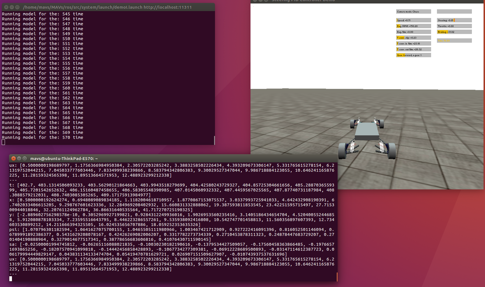
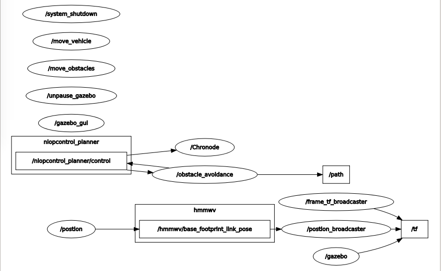

demoI
nloptcontrol_planner is used to generate a path which avoids all the obstacles and give a optimal trajectory. Then the generated trajectory will be passed to chronode, and vehicle will follow the trajectory by /trajectory/sa and /trajectory/ux in chrono environment.
To Run
roslaunch system demoI.launchExpected Output
First figure shows the ui for demoI, where Running model for the: xxx time shows the current step time.  Second figure shows the topic maps for demo I where we can see nlopcontrol_planner/control communicate with /obstacle_avoidance and \path 